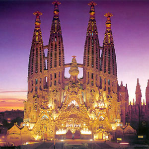

Home History Buildings Restaurants The Beach
| La Sagrada Familia |
| Park Guell |
| Casa Mila |
| Torre Agbar |
| Casa Estape |
| Casa Batllo |
| Camp Nou Stadium of F.C Barcelona |
| Palau de la Musica |
La Sagrada Familia

The Basílica i Temple Expiatori de la Sagrada Família English: Basilica and Expiatory Church of the Holy Family), is a large Roman Catholic church in Barcelona, Spain, designed by Catalan architect Antoni Gaudí (1852–1926). Although incomplete, the church is a UNESCO World Heritage Site, and in November 2010 Pope Benedict XVI consecrated and proclaimed it a minor basilica,as distinct from a cathedral which must be the seat of a bishop. Construction of Sagrada Família had commenced in 1882, Gaudí became involved in 1883, taking over the project and transforming it with his architectural and engineering style, combining Gothic and curvilinear Art Nouveau forms. Gaudí devoted his last years to the project, and at the time of his death at age 73 in 1926 less than a quarter of the project was complete.Sagrada Família's construction progressed slowly, as it relied on private donations and was interrupted by the Spanish Civil War, only to resume intermittent progress in the 1950s. Construction passed the midpoint in 2010 with some of the project's greatest challenges remaining and an anticipated completion date of 2026, the centenary of Gaudí's death.
The basílica has a long history of dividing the citizens of Barcelona, over the initial possibility it might compete with Barcelona's cathedral, over Gaudí's design itself, over the possibility that work after Gaudí's death disregarded his design,and the recent proposal to build an underground tunnel of Spain's high-speed rail link to France could disturb its stability.
Describing Sagrada Família, art critic Rainer Zerbst said, "It is probably impossible to find a church building anything like it in the entire history of art"and Paul Goldberger called it, "The most extraordinary personal interpretation of Gothic architecture since the Middle Ages